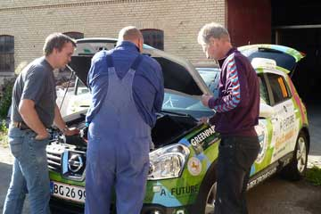

Vi kørte 170 km fra København til et værksted i Søllested hvor vi besøgte et par af Grønnes konstruktører. Desværre kom vi for sent til at de kunne nå at åbne batterikassen og se om alt er på plads. Derfra kørte vi videre til Ivan og Stine og deres yndige lille datter Karoline på deres gods på Feddet, nær Fakse. Aftenen gik med hyggelig snak om børn og biler og elmotorcykler. Ivan har kørt Paris-Dakar løbet flere gange. Vi lånte en helt ny luxushytte på Feddet campingplads.
Grønne og vi var til et lille inspirationsmøde hos Better Place, for at se on vi sammen kan udrette noget for elbilerne.
Senere kørte vi ud på Holmen til John Andersen. Derfra gik turen til Vedbæk, hvor nogle af Johns venner holdt en stor Sct, Hans fest. Aftenen bød på god mad og drikke og mange interessante folk at snakke med. Vejret var smukt og stille. En perfekt bålaften, med knitrende ild og stort fyrværkeri ude over vandet. Grønne kørte os tilbage til Amager ved midnat.
Nina

Tidligt om morgenen kørte vi fra Mørke i Grønne. Turen gik ned gennem Jylland og over lillebæltsbroen til Fyn. I Odense havde vi et inspirerende møde med Athenas, som gav os ideer til hvordan vi bedst kan præsentere næste års foredrag. Imens vi snakkede stod Grønne og sugede strøm til sig hos Bosch Autoservice, så vi kunne køre videre over storebæltsbroen til Continental i København. Der viste vi billeder fra Grønnes verdensomrejse, og bagefter var der en dejlig middag som afslutning på et vellykketmedarbejder- arrangement. Til sidst kørte Grønne os ud til Anne Suzettes hyggelige kolonihave hus på Amager. Da havde Grønne slået sin egen rekord og kørt 352 km. på en dag.
Jeg Grønne, farer omkring. Nu har jeg været i København fordi Nina og Hjalte og Ivan arbejder på et filmmanuskript om min verdensomrejse. De skulle også snakke med energiministeriet og alverdens entrepenører, kunstnere og musikere. Et Besøg på forlaget Rosinante og co blev det også til. Men det bedste var alligevel at komme med færgen hjem til Djursland igen. For mig er der ingen grund til at frygte færger. Jeg behøver ikke at lade op undervejs, kan nemt køre fra København til Mørke på en opladning.
Tre kompetente kvinder fra Syddjurs kommune kom for at se på vores bakke. Vi vil gerne stille en lille husstandsvindmølle fra firmaet Zeteco op på bakken, hvor der har stået en større vindmølle før. Vi synes jo at det ville være godt hvis Grønne kunne køre på vindmøllestrøm. Men nu er der nogle regler som gør det næsten umuligt, at opstille selv en lille 6 wat mølle. Den må ikke stå på toppen af en bakke, af landskabelige grunde... men på bakkerne må gerne stå kæmpestore vindmøller. En husstandsvindmølle skal være nær vores eget hus og langt fra nabohusene. Så det er kun muligt på ensomt liggende landbrug. Grønne stod og undrede sig. Sammen med Zeteco finder vi vel en løsning, selv vi ikke må stille en mølle der hvor det blæser mest, og hvor der er længst til naboerne. En anden mulighed er en garage med solceller på taget. Men det giver en dårliger økonomi, da solen ikke skinner så meget om vinteren, og ikke om natten hvor vi lader Grønne.
Nina og Hjalte
Grønne kørte mig til posthuset for at sende et brev til Thrane og Thrane med simkortene til satellittelefonerne. De har været helt uundværlig på jordomrejsen, som nu er fuldført. Her i landet kan vi jo bruge vores almindelige mobiltelefoner. På biblioteket i Rønde checkede jeg lige hvad der var om elbiler- der var tilsyneladende ingenting. Jeg lånte en bog om photoshop, så jeg kan lave et nyt visitkort til Moto-mundo.
Nina
Omsider fik jeg, den grønne bil, lov til at komme til Århus. Hjalte og Nina kørte mig ud til deres revisor, hvor jeg stod på parkeringspladsen en halv times tid. Bagefter kom vi forbi Art at the sea. Nina og Hjalte stoppede ikke men kørte direkte til banken på Store Torv. Da vi kørte videre fik jeg et glimt af Olaf Eliasons store regnbue på toppen af Aros kunstmuseum. Hvor er den flot! jeg måtte blinke med lygterne et par gange, jeg kunne knapt nok tro at det var sandt. Nina og Hjalte må have meget travlt, for også her kørte vi forbi. Men de standsede da i højbjerg for at spise frokost i Beths dejlige have som jeg kunne se ude fra vejen.
Hilsen fra Grønne
Elbilerne kørte af sted fra campingpladsen i Aså. Nogle tog motorvejen direkte til Ålborg. Vi fulgtes med dem som kørte til Egense, for at sejlede med den lille færge til Hals. Det var dansk sommer når den er bedst, sommer med med kyst og strand, danebrog og iskager - og nu også de stille elbiler! Vi traf en udflugt af gamle mænd på knallerter, de så også ud til at have det sjovt. Til sidst sagde vi farvel til elbilfolket og kørte til udbyhøj hvorfra vi nød endnu en færgetur inden vi nåede hjem til Mørke.
|
EV2011 Den årlige samlingen
- med venner av kjøretøy med elmotorer og batterier.
|
www. evguide.nu
en nordisk guide for elbilinteresserede
Vi mødtes med norske danske svenske og engelske elbilvenner ved Nordjyllandværket, et kulfyret varmekraftværk, hvor vi fik foredrag og rundvisning. 12 elbiler af forskellige mærker og årgange stod parkeret udenfor. Senere kørte hele flokken til kræmmermarkedet i Jallerup. Om aftenen var alle samlet på campingpladsen i Aså hvor Jette fra Bergen gav Hjalte og mig plads i sin campinghytte. Efter en overdådig middag med helstegt pattegris viste vi billeder fra jordomrejsen med Grønne.
Nina

Expeditionen startede fra Danmark i to elbiler. Den blå bil blev sendt hjem fra Moskva, da den ikke kunne køre og det ikke var muligt et reparere den på stedet. Jeg måtte senere flyve fra Beijing til Helsinki for at få den ud af Rusland på et fejeblad. Jeg fløj tilbage til Beijing, og den blå bil blev kørt til Saxkøbing for at blive repareret, hvor den i sin tid var blevet konverteret til el. Men desværre gik Afuture konkurs og den blå bil måtte vente. Nu er Søren Beck og Peter Doll ved at starte op igen og den blå bil vil blive repareret. Den grønne bil kan fortsat følges på google-kortet, når du vælger “Bilerne live”. Når den blå bil kommer til at køre, vil den igen kunne ses på kortet.
Nina